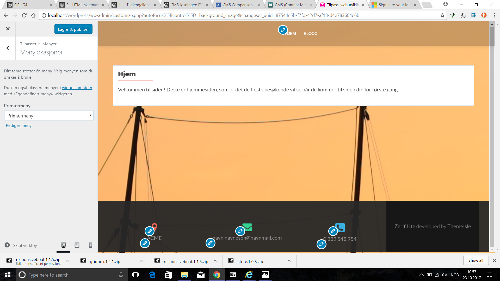

Endring av tema og videre tilpasninger
Jeg hadde ingen spesielle mål når jeg designet dette, jeg bare prøvde meg rundt tilfeldig. I prinsippet er dette dårlig praksis: man bør ha et mål for øyet for å lære om hva temaet tilbyr, og hva vi evt. kan mekke.
Legg til nytt tema!
For å legge til et tema må du trykke på legg til nytt tema. Skjermen skal da se sånn noenlunde det samme ut som på bildet nedenfor, og man fortsetter da ved å flytte over en Zip-fil. I dette eksempelet la jeg til Zerif-lite og responsive boat som begge eer beregnet på forretninger og porteføljer.
{kind=link}
Karakteristikker ved de ulike temaene
{kind=link}
Vanlige modifikasjoner på forsiden
Det første bildet viser temaet før, det typiske jeg har prøvd å få til er bytte av tekst, bakgrunnsfarge og bakgrunnsbilde.
{kind=link}
{kind=link}
{kind=link}
{kind=link}
{kind=link}
Modifiser meny
For å få til en god flyt i menyen med sidene kan det være en idè å modifisere menyen. Dette gjøres ganske enkelt som vist på bildet under.
{kind=link}
Vanlige modifikasjoner på innlegg-siden
Bildet viser før/etter endring av tekst-type og bakgrunnsfarge
{kind=link}
Sikkerhetstanker med bruk av ulike temaer i WordPress
Ha alltid kun to temaer, på open source bør du ikke ha mer enn du strengt talt bruker. Det nyeste standard-temaet til Wordpress er alltid veldig solid kodet, og bør være med, om enn bare som backup. Hvis ett tema fucker seg etter en modifikasjon, mens 2017 funker, da er det noe galt med temaet. Søk opp temaet og widget, sammen med frasen "compatibility issues". Trykk inn på info om temaet, da finner du ut om når det er lagd, hvilken utgave det er, antall installasjoner, reviews og evt. sikkerhetshull. Nyere temaer er ofte ikke testet skikkelig ut og kan være mer skumle når det gjelder sikkerhetshull. Themeforest (Temaer i wordpres) og codecanyon.net (plugins og widgets) koster penger, men er mest sannsynlig mer safe.